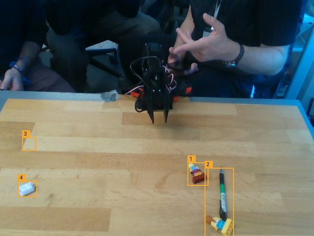
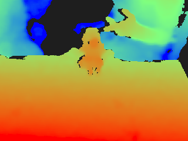
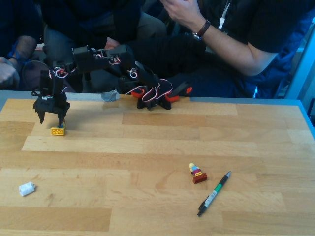
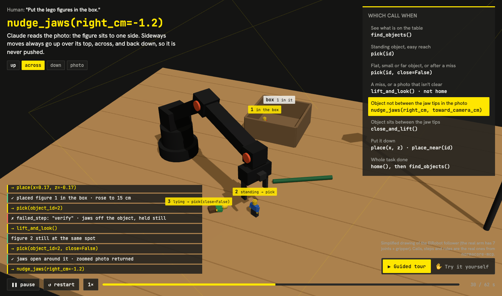
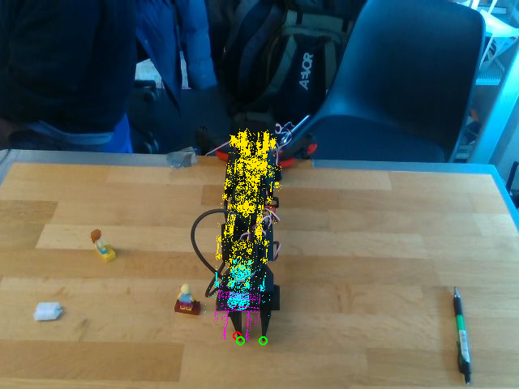

One Rust binary owns the hardware. Drivers write everything they see into NormFS queues. The web UI, the desktop app and your own Python or Go code all reach those same queues through one API on ports 8888 and 8889.
Claude picks up objects by looking through a RealSense depth camera, not by replaying recorded motions. Code does all the measuring: it finds objects in the colour image, places them on the calibrated table plane, computes inverse kinematics and checks where the jaws really are. Claude decides what to do, reads the photos and notices when something looks wrong. It never guesses joint angles.
This section replaces the earlier plans further down where they disagree. The marker-based workspace map, the desk webcam and the "teach, then tell" skill replay are now optional or unused. The full hand-off for agents is normacore-mcp/CLAUDE.md.
/events feed for a viewer panel that isn't built yet.| Process | Where | What it does | Who starts it |
|---|---|---|---|
| Station | :8888 TCP, :8889 web | Owns the servo buses and the USB cameras. Unchanged upstream binary, run as station --tcp --web. | Human or agent |
| RealSense bridge | ws://127.0.0.1:8890 | Streams the D435's colour image and the depth image aligned to it. Keeps calibration.json (camera pose and joint zeros). | Human: it needs sudo on macOS |
| MCP server normacore-mcp | 127.0.0.1:8790/mcp | The tools Claude calls. Talks to Station over TCP and to the bridge over WebSocket. Also serves GET /events, a live feed of the connected agent and each tool call (activity.py). The feed is display only, and the viewer panel that will show it isn't built yet. Restart the process after any code change. | Agent (allowed) |
| station-viewer | :5173 (dev) | The 3D arm plus the RealSense point cloud, using the same joint zeros and camera pose as the server, so what you see is what the tools compute. Unplugged cameras are hidden, a standby panel shows when no hardware is connected, and kiosk mode runs it full-screen. | Human or agent |
| estop.py | separate program | Emergency stop that sets a latch in Station. Every motion tool refuses while it is set. | Human |

find_objects at 12:45, from the saved frame. Figure 1 and the lego by the pen came from the run before. Box 3 looks like a false detection.


find_objects with the arm at home. You get numbered objects with position, height and standing, plus reach.how, which is the exact call to use. crowded_by means move the neighbour first.pick(id). A flat, small or far object, or after a miss: pick(id, close=False), read the zoomed photo, nudge_jaws, then close_and_lift.place_near(id) (beside a pen's long side, or at one end) or place(x, z). Afterwards the arm rises straight up to 15 cm.home (~30 s), then one find_objects to confirm.lift_and_look raises the jaws 10 cm and returns a fresh object list, then try again from there.lift_and_look. When the jaws are low the gripper hides the object, and guessing from such photos once pushed a figure 8 cm across the table.nudge_jaws goes up over the object, across, then down. No joint moves near objects.PLACE_CLEAR_Y = 15 cm.pick callclose=False it stops after step 3 and returns a zoomed photo.data/reach_map.json, because the real jaws land short: −2.5 cm at 27 cm from the base and −3.0 cm at 32 cm.arm_model.TIP_LOCAL).depth.find_jaw_tips) and corrects the sideways offset. The source is camera when measured live, otherwise saved (median of the last 10 measurements in data/jaw_offset.json, currently −1.6 cm).failed_step: "verify".data/runs.jsonl, and the frames go to data/frames/ (last 60).| What | How | Stored in |
|---|---|---|
| Joint ranges | Station web UI: Auto Calibrate → Save. A human does this, never the agent. | Station |
| Camera pose + joint zeros | arm_fit.py capture at about 7 poses (including low and far ones), then fit --save, then check and look at the pictures | realsense-bridge/calibration.json (the viewer uses it too) |
| Reach error | calibrate_reach(side) with that side of the table clear, ~1.5 min | data/reach_map.json |
| Sideways jaw offset | Measured by pick every time it sees the jaw tips | data/jaw_offset.json |

arm_fit.py check, pose p3_low: the fitted model drawn over the real arm (yellow arm, cyan gripper, magenta jaws). The green circles are the model's jaw tips. The fit is within 7–10 mm in every pose.| Before | Now | Why |
|---|---|---|
| Desk webcam, coloured markers, skill replay as the main plan | RealSense colour + depth, look-and-pick every time. Skills are optional, markers are legacy. | Replay fails as soon as an object is off its marked spot |
| Depth-only object detection | Detection in the colour image (find_objects_rgb) with positions on the table plane. Depth is only used for height, as the median of 5 frames. | Depth missed the lying minifigure. Table noise is 2.2 mm per frame. |
| Aim point from the gripper's bounding box | A fixed point on the wrist roll axis | The old point moved up to 14 mm with tilt, roll and opening |
| Motion clock followed the wall clock | The clock advances at most two periods per tick, planning runs in a thread, and read_buses reconnects once | On battery the ticks arrived late, the goal jumped ahead and the arm lunged into the object |
| A failed motor read parsed as position 0 | The server and the viewer keep the last real reading | It caused the one-frame "glitch" in the 3D view and bad input to the motion checks |
| Sideways jaw move with a 1.5 cm hop | Up over the object's top, across, down | The hop pushed a figure and a box ~8 cm |
| Release at a fixed 0.45, low retreat | Opens at least 0.2 wider than the grip, then rises to 15 cm | A wide figure wasn't released, and the next swing knocked a placed lego over |
| Depth camera 25° above the table | Moved closer and steeper around 12:20 and refitted with arm_fit.py at 12:34. Pitch is now about 43° (−0.74 rad), with the camera ~59 cm up and ~70 cm out from the base. The fit before (00:01) had it 87 cm out at 37°. | At 25° the gripper hid the object, and positions along the view were off by ~2 cm per cm of height error. The target in the hand-off was ≥ 50°. |
Today's log (data/runs.jsonl, 22 Nov): pick succeeded 3 of 13 times, close_and_lift 3 of 7 and place 6 of 7. In the morning session 3 of 4 figures ended up beside the pen. With corrections the arm lands within about 1 cm. That is enough for a standing figure, but a figure lying flat needs the look-and-adjust steps.
Latest failures (12:42–12:45): these were engine aborts during the approach or the carry, not misses: "servo 6 (wrist_pitch) is 0.118 away from its target for 5 ticks", then the same for servos 7 and 1. The tracking limit (TRACK_ERR_MAX 0.10 over 5 ticks) and MAX_VEL_NORM 0.5 are still untuned defaults. Raising them needs the human's OK.
Watch on the first runs: colour find_objects on standing objects, the check before closing, the over-the-top nudge_jaws and lift_and_look. All four were written after the arm was unplugged and tested offline only. The reach map (12:25) was measured after the camera moved, so it still applies.
Next: use the gripper camera in the check before closing, have pick retry by itself, and tune the engine limits with the human.
commands marks the only queue drivers read from instead of writing to.State flows out of the robot continuously. Commands flow in as packets on a single shared queue that every driver watches, each one picking out its own command type.
st3215/inference and persists it to disk.limit=0, which is a follow.0x38).st3215.Command, e.g. write 2 bytes at 0x2A (goal position) on motor 1.DriverCommand of type STC_ST3215_COMMAND, then into a StationCommandsPack.commands.st3215/tx and writes the register.SendCommands skips the packsoftware/station/shared/station/streams.go:31 sends each DriverCommand as its own packet without the StationCommandsPack wrapper. ST3215 commands (type 0) decode as an empty pack and are silently ignored; every other type fails to decode and is dropped. Python, TypeScript and all drivers use the wrapper. Nothing in the repo calls the Go function yet, but its README recommends it.
Fix: marshal one StationCommandsPack{Commands: commands} and write it with client.Enqueue("commands", …).
MCP support doesn't need to touch norma-core. Because the station API exposes everything, an MCP server can sit outside it as an ordinary client. acc22ak/normacore-mcp already does this: server.py turns 8 tools into queue reads and commands writes. Build on that repo during the hackathon. Embedding MCP into the Rust station is the later, cleaner option.
| Option | Where the code goes | Good | Costs |
|---|---|---|---|
| A · separate server | normacore-mcp/server.py | Exists and has an offline test. Python, quick to change. Works with any station build. | Needs a norma-core checkout for the client and protobufs, plus Python ≥3.10. One more process to run. |
| B · inside the station | new software/station/bin/station/src/mcp/, routed in web/server.rs | One binary. Remote MCP over HTTP. Tools could call drivers directly, without the queue round trip. | Rust rewrite of the 8 tools, an MCP crate dependency, and a station rebuild for every tool change. |
| Upstream example | software/station/examples/mcp-py | Lives next to the other examples and uses the in-repo station_py, no env var needed. | Only worth doing once A is stable; it's a PR to norma-core. |
look returns the latest JPEG from each camera; list_camerasget_robot_state: normalized joint positions, torque, current, errors per busmove_joints, nudge_joints, set_gripper, capped at 0.15 of a joint's range per callhold freezes the pose; relax turns torque off and the arm dropspython3 is 3.9.6, but the mcp package needs ≥3.10. Make the venv with uv venv --python 3.12 instead of python3 -m venv.target/gen_python is committed in norma-core, so NORMA_CORE_REPO can point at the existing clone.FOLLOWER_BUS. With two arms plugged in, the move tools refuse to guess.look("5") with fewer cameras raises an IndexError instead of a clear message.The station API is the NormFS protocol (protobufs/normfs/normfs.proto). A ClientRequest carries exactly one of four requests; a ServerResponse answers with the matching field. Over TCP, each message is a u64 little-endian length followed by the protobuf bytes. The WebSocket at ws://host:8889/api carries the same messages.
| Request | Fields sent | Response | Use it for |
|---|---|---|---|
setup (1) | version: 1 | version, instance_id | First message on every connection |
ping (2) | sequence, client_timestamp_ns | Station clocks: local_stamp_ns, monotonic_stamp_ns, plus your request echoed back | Keep-alive; clock offset to the robot |
write (10) | write_id, queue_id, packets[] | WR_DONE + one Id per packet, or WR_SERVER_ERROR | Sending commands (queue_id = "commands") |
read (11) | read_id, queue_id, offset {id, type}, limit, step | Stream: RR_START, RR_ENTRY…, RR_END; or RR_QUEUE_NOT_FOUND / RR_NOT_FOUND / RR_SERVER_ERROR | History, latest entry, live follow |
Latest N entries: offset = {id: N, type: OT_SHIFT_FROM_TAIL}, limit = N.
Follow live: shift 0 from tail, limit = 0. The stream never sends RR_END.
Replay history: OT_ABSOLUTE from an entry id, with step > 1 to downsample.
Each RR_ENTRY carries the entry id, the raw data bytes (decode them with the queue's message type) and a data_source that says whether it came from memory, the write-ahead log, disk or the cloud.
Several reads and writes can run on one connection at once; responses are matched by read_id / write_id.
| Queue | Message type | Who writes |
|---|---|---|
st3215/inference | st3215.InferenceState | st3215 driver, every poll |
st3215/rx, /tx, /meta | raw bus traffic, sent commands, bus info | st3215 driver |
commands | commands.StationCommandsPack | you, the viewer, the MCP server |
inference-states | inference.InferenceRx: latest pointer for every queue, with its type | station |
usbvideo/<md5> | usbvideo.RxEnvelope, JPEG frames | usbvideo driver |
inference/normvla | normvla.Frame: joints + 224 px frames | inference driver, ~10 Hz |
system/rx | host telemetry | sysinfod |
main | envelope.RootQueueEnvelope: app and queue start events | station |
An st3215.Command names the bus with target_bus_serial and sets one action. Wrap it in a DriverCommand with type = STC_ST3215_COMMAND, put that in a StationCommandsPack, and write the pack to commands.
Motor state comes back as a raw register dump: InferenceState.buses[].motors[].state, with range_min / range_max from calibration. If the two are equal, the joint is uncalibrated.
| Action | Fields |
|---|---|
write | motor_id, address, value |
sync_write | address, motors[{motor_id, value}]: one register, many motors in one bus frame |
reg_write + action | stage writes, then trigger them together |
auto_calibrate / stop_auto_calibrate | sweep joints to find their ranges |
reset_calibration, freeze_calibration, reset | calibration and motor housekeeping |
| Address | Register | Size | Notes |
|---|---|---|---|
0x28 | Torque enable | u8 | 0 = limp, 1 = holding |
0x29 | Acceleration | u8 | write before the goal |
0x2A | Goal position | u16 | 0–4095, inside the calibrated range |
0x2E | Goal speed | u16 | steps per second |
0x38 | Present position | u16 | bit 15 is the sign |
0x40 | Status | u8 | non-zero means a servo error |
0x45 | Present current | u16 | the driver limits this |
All values are little-endian. Normalized position = (raw − range_min) / (range_max − range_min).
The server runs in tmux pane main:4.3 as streamable HTTP at http://127.0.0.1:8790/mcp. It's registered in Claude Code as normacore for the robotic-hackathon folder. Every tool is a few reads of the latest queue entries, plus at most one write to commands.
| Tool | Arguments | Returns | Station calls |
|---|---|---|---|
look | camera: "all", an index or a queue id | A label and a JPEG per camera | read inference-states, then the last 8 entries of each usbvideo/… |
list_cameras | none | Camera queue ids | read inference-states |
get_robot_state | none | Per bus and motor: joint name, raw and normalized position, range, torque, current, error; plus the follower bus | read the last st3215/inference |
move_joints | targets: {"elbow": 0.4, "1": 0.5}, optional bus | From / to per joint, and whether it was clamped | read st3215/inference; write 1 pack with 4 sync-writes: speed, acceleration, torque on, goal |
nudge_joints | deltas: {"elbow": -0.05}, optional bus | Same as move_joints | same as move_joints |
set_gripper | opening: 0..1, optional bus | Same as move_joints | same, for motor 8 |
hold | optional bus | Confirmation | goal = present position, then torque on |
relax | optional bus | Confirmation | torque off on every motor: the arm drops |
MAX_STEP_NORM = 0.15 of its range; anything larger is clamped and reported.FOLLOWER_BUS or bus= names the follower.station_py and the protobuf code from itlocalhost; port 8888 is impliedstdio (default) or streamable-http, with MCP_HOST / MCP_PORT (8790)GRIPPER_MOTOR_ID 8 (6 on an SO-101)The usbvideo driver picks up every UVC camera on its own. It checks for new devices once a second, so plugging in a camera while the station runs works too. Each camera gets its own queue, named after an md5 hash of the device's unique id: usbvideo/<hash>. The id is fixed per device, so the queue name stays the same across restarts and you keep each camera's history.
look returns one image per camera, and each normvla frame carries the images from every camera next to the joint positions.More than relaying, less than seeing. It reshapes, timestamps, stores and synchronises frames, but never looks at what's in them: no detection, no tracking, no lens calibration. Understanding the picture is left to the consumer (Claude via look, or a policy like SmolVLA).
resolution: auto) or exactly the size you set; usually MJPEG.frame-skip drops frames before any decoding, so skipped frames cost no CPU.resize_target (224), keeping the aspect ratio.usbvideo/<hash> and persisted, along with connect, disconnect and error events. Optional S3 offload.inference/normvla and to shared memory at /tmp/normvla for a policy process.inference-states entry and keeps queues of type QDT_USB_VIDEO_FRAMES.usbvideo/… queue over TCP 8888.So Claude sees the stored frames: resize_target on the short side with the aspect ratio kept. It doesn't see the full camera resolution, or the stretched 224 × 224 images in normvla. Each call is a snapshot, not a stream.
Freshness check: queues persist across restarts, so an unplugged or frozen camera still has a "latest" frame. Each look label now says how old its frame is, e.g. camera 1: GRIPPER CAM (usbvideo/…) - frame 0.1 s old. Past FRAME_MAX_AGE_S (2 s), or if the camera reported a disconnect after its last frame, the label says STALE and tells Claude not to plan or verify moves with it. The image still comes back, for diagnosis.
Age = the MCP machine's clock minus the frame's station wall-clock stamp. That's exact here, because both run on the same Mac. A timestamp far in the future is reported as a clock mismatch instead. The inference-states stamp can't serve as the reference, because the station only writes it when another queue changes. Labels now keep each camera's index from list_cameras. Camera history still isn't exposed; the roadmap's skill_from_history will need it.
look numbers cameras by sorting the queue names, so the order is stable but arbitrary. Check once which index is which.usb-video in station.yaml (resolution, resize_target, frame-skip) applies to all cameras. You can't give the desk cam more pixels than the gripper cam.resize_target: 480; that also changes stored dataset frames.The station log in pane 4.2 prints Discovered new camera: … for each one, and the home page at localhost:8889 shows a video tile per camera.
From Claude: list_cameras should return two usbvideo/… queues, and look one labelled image each.
A small, worthwhile MCP change: a CAMERAS setting that maps each queue hash to a role, e.g. gripper=usbvideo/3f2a…,desk=usbvideo/9c1e…, so look("desk") works and the labels say what each image is. Askar's latest server.py already returns a clear message for a wrong camera index.
"Calibration" covers four different things. The station already handles the first one without a camera, by touch. The other three are exactly what the agent needs to act from images, and nobody does them today. An agent can do them over MCP if a small vision tool does the measuring and Claude does the judging.
| Kind | What it answers | Today | Camera + agent? |
|---|---|---|---|
| Joint ranges | Where each servo's mechanical limits are (range_min / range_max) | Station Auto Calibrate drives each motor until it stalls against its limit (st3215/src/auto_calibrate, with an ElRobot sequence). Leader: by hand, because 5 V is below the 7 V cutoff. | Not needed. Touch is more precise than vision here. The camera could watch for collisions during the sweep, but re-calibrating shifts every saved skill, so it stays a human decision (CLAUDE.md §6 rule 7). |
| Direction map | Which way “+0.05 on the elbow” actually moves the arm | An empty table in CLAUDE.md marked “fill this in on the real robot” | Yes, easy. Nudge one joint, look, compare, write the row. Claude is reliable at “moved left / up / rotated”. |
| Camera ↔ arm map | Where the gripper appears in the desk camera for a given pose, and which pose reaches a given spot on the table | Nothing. The roadmap plans above_<cell> poses taught by hand (P2). | Yes, with a marker. Move through a grid of poses, detect a coloured tag on the gripper with OpenCV, and fit pixel ↔ pose. This could replace most of the hand teaching. |
| Drift check | Did the camera, the table or the joint numbers move since last time? | Planned in CLAUDE.md §6 rule 5 | Yes. Go home, look, compare against a stored reference and a tape mark on the table. |
hold, arm in a clear pose, both cameras fresh (not STALE).CLAUDE.md, including which gripper end is open, and commit.find_marker gives the tag's pixel position, saved with the raw joint positions.data/workspace.json with a calibration snapshot, like a skill.go_to_pose("home"), then look with both cameras.Claude judges images well: is the gripper above the cube, did the joint go left, is something in the way. It's poor at exact pixel positions, especially at 224 px. So the vision tool measures (marker centre, colour blob, pixel offsets), and Claude orchestrates, sanity-checks, and decides when something looks wrong. This matches the roadmap's vision.py / find_objects.
The move tools refuse uncalibrated joints, so joint-range calibration has to happen first, in the web UI. Direct writes have no current protection (only mirroring does), so sweeps need the small steps and the abort rules of the planned motion.py. The desk camera has no lens model, so the map only holds for the table plane at one height, and only while the camera stays put. Closing the loop with the gripper cam at grasp time absorbs whatever error is left (CLAUDE.md §6 rule 1).
The depth camera finds objects well enough. The failures come from the step after that: turning a camera position into a gripper position. Three separate errors of about 1 cm each stack up there, and pick runs open loop, so none of them gets corrected. The jaws open 5 cm and the small objects are 1.3–2 cm wide, so 2 cm of error is a miss.
Measured 2026-11-22 offline, from the 7 saved frames in normacore-mcp/data/arm_fit_samples and the arm model, with the calibration in realsense-bridge/calibration.json. The robot was not moved. Items marked “not verified” are hypotheses with a test attached.
New finding, and the main one: the arm model puts the centre between the jaws on top of one real jaw tip. In the three saved frames where the jaws point down, the real midpoint is 22.6, 18.5 and 20.7 mm to the side. With 5 cm jaws that puts a small object under a jaw instead of between them, which matches the 6 closes on air. Run arm_fit.py check data/arm_fit_samples <folder> to see it in pictures.
| Change | Where | Checked how |
|---|---|---|
pick looks at the real jaws with the depth camera while hovering, centres them over the object, then descends. Falls back to a saved offset (seeded at 2 cm) when the jaws can't be seen. | depth.find_jaw_tips, server._align_jaws, data/jaw_offset.json | Detection tested on your 3 real frames. The correction itself has only run on the simulated arm. |
| Fixed aim point on the gripper, on the wrist roll axis. | arm_model.py | Unit tests: same point in every pose, unmoved by opening or rolling. |
| Inverse kinematics: hard cable limits on forearm and wrist roll, retry from two standard poses when the solver stalls, wrist roll held exactly, straight-line descent. | arm_model.solve_ik, server._ik, _move_tip | Grid of 90 targets and 30 random starts offline; simulated pick comes down vertical. |
| Jaws turn by themselves to close across a long object's short side. | server._auto_roll_deg | Not tested beyond the model. Watch the first run. |
Run log: every pick and place goes to data/runs.jsonl. | server._log_action | Offline test. |
Depth: median of 5 frames for find_objects and depth_point. | depth.merge_frames | Unit tests. The detection thresholds are unchanged. |
Honest error name: error_cm is now model_error_cm. | server._move_tip | Offline test. |
Still needs the robot: the first 10 picks to confirm the jaw correction (read steps.jaw_look in each result), the forward/back error (one camera can't measure it on thin jaw tips; the gripper camera can), the bending at far reach, and a new calibration capture with the roll joints at different values. A refit that included the roll joints moved the wrist roll zero by 19° without a better fit, so I did not save it.
Dropped: changing the bridge's depth pooling. A median there would invent points between an object and the table.
| Check | Result | What it means |
|---|---|---|
| Aim point in the gripper's own frame, over 14 poses | Moves 85.6–91.9 mm along the jaws and from −0.5 to −14.3 mm across them | The point that pick aims is not a fixed point on the gripper. It shifts up to 14 mm with the pose. Confirmed code defect. |
| Table plane seen through the fitted camera pose | Tilted 12–15 mm per metre toward the camera and 5 mm low at the base, the same in all 7 frames | The fit tilted the camera about 0.8° away from the table to match the arm's shape. The arm model and the table disagree, so the camera pose carries roughly 1 cm of error at the 0.75 m viewing distance. |
| Depth points on the gripper vs the model | Median 8–15 mm apart (whole arm: 6.5–11 mm). In 4 of the 7 poses the points sit 6–7 mm above the model. | The gripper is the worst-fitted part of the arm. The model's gripper has no camera mast, cable or AprilTag, and the real one does. |
| Depth noise on the bare table | 2.2 mm standard deviation, on a 320 × 240 grid (about 2.5 mm per pixel) | A 1.3 cm minifigure is 5 pixels wide. Anything under 9 mm tall is dropped by find_objects, which is why the lying minifigure and the pen are missed. |
Gripper tag (data/gripper_marker.json) | 3 samples, 1.15 cm spread, and not visible at grasp poses | The marker correction cannot help where it is needed, and its own offset was measured through the same arm model it is meant to correct. |
| Cause | Where | Size | Status |
|---|---|---|---|
The reported accuracy is not real accuracy. _move_tip compares the target with the tip computed from the joint encoders through the same model. It reports 1–2 mm while the real gripper is centimetres away. | server.py:1667 | Hides everything below | Confirmed by reading the code |
No look before closing. pick never uses the gripper camera or a second depth frame. Your log records 6 closes on air with the object visible just ahead of the jaws. | server.py:1938 | Turns any error into a miss | Confirmed |
| The aim point wanders. The “tip” is the centre of the gripper's bounding box in world axes, so it changes when the gripper tilts, rolls or opens. The pointing direction is built from it too. | arm_model.py:212 (tip, grasp_point) | Up to 14 mm | Confirmed by computation |
| The arm bends and the encoders can't see it. Printed links and servo horns flex under load. Your log measured the tip 1.5–3 cm below the planned height when extended. | Hardware; not in the model | 1.5–3 cm in height at far reach | Measured by you on 2026-11-21 |
| The calibration fit is pulled by parts the model doesn't have. The fit matches depth points to the nearest model surface, and the mast, cable and tag are counted as gripper. It also reports the wrist pitch zero as 8.1° off, which at the jaw length is 1.3 cm. | arm_fit.py:76 (select) | About 1 cm | Not verified. Test: hold a phone level on the jaws at the pose the model calls level. |
| Coarse, single-frame depth. The bridge halves the resolution and keeps the nearest value of each 2 × 2 block, which fattens object edges. Each tool call uses one frame. | bridge.py:160, depth.py:53 | 2–5 mm, plus missed flat objects | Noise measured; edge effect not measured |
| Motion aborts. Late control ticks on battery power and tracking stops on the heavy shoulder moves. | motion.py, _move_duration | Stops the run, doesn't miss | From your log |
pick and place result to data/runs.jsonl (object, target, step errors, outcome). There is no run log today, so there is no way to tell which fix helped. About 15 minutes.tests/test_arm_model.py.pick add the interpolated difference. This cancels camera pose, bending and joint-zero errors together, because the object and the correction come from the same camera. Largest single gain.data/exploration.md). With the depth camera: measure jaws and object in the same frame and move by the difference.The three-arrow handle is replaced by one ball that rides just above the gripper. Turn it on with the same toolbar button on the arm's card.
While dragging, the preview arm is checked against the table top and a limit behind the base. The ball stops at the last allowed spot and turns red; it does not pass through. An arm that already starts inside a limit can move out of it, not further in.
The limits are in src/devices/elrobot/config.ts (elrobotKeepOut): table at height 0, back limit 12 cm behind the base centre, 8 mm clearance. The 12 cm is my guess: measure the real distance and change backX. The back limit is drawn as a faint red sheet.
Checked by type-check, lint and unit tests of the drag and limit maths (grab-ball.test.ts). Not tried in the browser: no arm was connected, so the 3D view had nothing to show.
Steps 1–4 together should take the lying minifigure from 0 of 6 to mostly working. That is an estimate, not a measurement: step 1 is what will show whether it holds.
From the CLAUDE.md roadmap in normacore-mcp (commit cecc188). The bet: keep geometry out of the LLM. Instead of Claude guessing joint angles from images, a person demonstrates a skill once with the leader arm. Claude saves it as a JSON file of keyframes, then plans in plain English with named skills, checks every step on camera, and tunes the skill data when a run goes wrong.
Pitch: “Show it once by hand, then just tell it what to do. It watches, acts, checks itself and gets better.”
data/, which the server re-reads on every tool call, so a tuned skill takes effect immediately. Code changes need a server restart: in our tmux setup, restart pane 4.3; under stdio, reconnect with /mcp.Everything is still to do; P0 is the foundation the learning loop needs. New tools are built in this order rather than worked around with raw joint moves.
| P | Component | Files | What | Status |
|---|
Final tool surface: perception (look, find_objects, gripper_status, get_robot_state), motion (go_to_pose, nudge_joints, grasp, release), skills (list_skills, run_skill, edit_skill, pick, place), learning (record_demo, skill_from_history, save_pose), safety (hold, relax).
Claude can change skills and code itself, but never these without a person's explicit OK:
MAX_STEP_NORM, velocity caps, data/limits.json, current-abort thresholds, the leader-bus ban, or how hold and relax behave.Keyframes list only the joints that change; the rest hold. Composite skills can call other skills with {"skill": "…"} steps.
{
"name": "pick_cube_b2",
"description": "Pick the cube from cell B2",
"preconditions": ["cube visible in B2", "gripper empty"],
"effects": ["cube in gripper"],
"bus": "<follower serial>",
"keyframes": [
{"joints": {"1": 0.50, "2": 0.31, "4": 0.72, "8": 0.90},
"duration_s": 1.5, "label": "above B2"},
{"joints": {"2": 0.36, "4": 0.66}, "duration_s": 1.0, "label": "down"},
{"gripper": "close", "label": "grasp"},
{"joints": {"2": 0.31, "4": 0.72}, "duration_s": 1.0, "label": "lift"}
],
"speed_scale": 1.0,
"status": "new | ok | flaky | broken",
"version": 1,
"last_good": null,
"stats": {"runs": 0, "success": 0},
"changelog": [{"version": 1, "note": "learned from demo"}],
"source": {"type": "demo", "station_time_range_ns": [0, 0]}
}
Paths are relative to the norma-core repo root. The Rust station and the React viewer are where most changes happen; the Electron app is a thin shell you can ignore while developing.
| Part | Path | Language | What it does |
|---|
There is no REST API. Every message on TCP 8888 is an 8-byte little-endian length followed by a protobuf ClientRequest or ServerResponse from the normfs package. The WebSocket on 8889 at /api carries the same messages.
A connection starts with a setup handshake at version 1. Clients ping once a second when idle. Reads stream back as a start marker, then one entry per message, then an end marker; a follow never ends.
Queue ids are plain strings. A usbvideo/… queue is named after a hash of the camera, so list the queues in the viewer to find yours.
| Request | Fields | Reply |
|---|
Rust 1.97.1, Go, Node 23 and uv are already installed. You still need protoc for the Rust protobuf build, plus nasm and cmake for the turbojpeg library the camera driver uses.
Quit the DMG app first. It runs its own station in the background on 8888 and 8889.
The DMG app keeps station.yaml and station_data/ under ~/Library/Application Support/. Your build uses the folder you run it from, so copy the config over if you calibrated in the app.
For UI work, run npm run dev in station-viewer and open localhost:5173; it talks to your running station, so the binary doesn't need rebuilding.
brew install protobuf nasm cmake cd norma-core make protobuf # Go + Python protobuf code cd software/station/clients/station-viewer npm ci && npm run build # web UI, embedded in the binary cd ../../bin/station cargo build --release -p station RUST_LOG=info ../../../../target/release/station --tcp --web # open http://localhost:8889